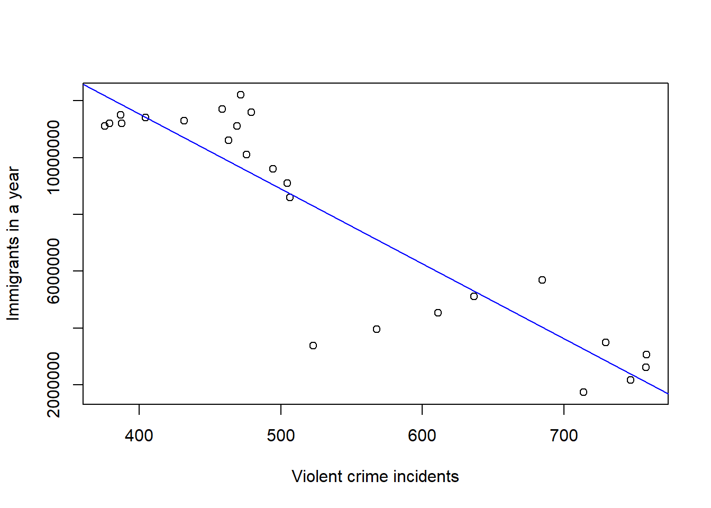
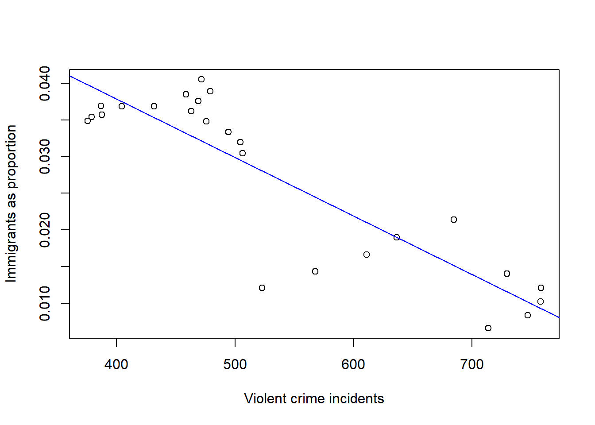
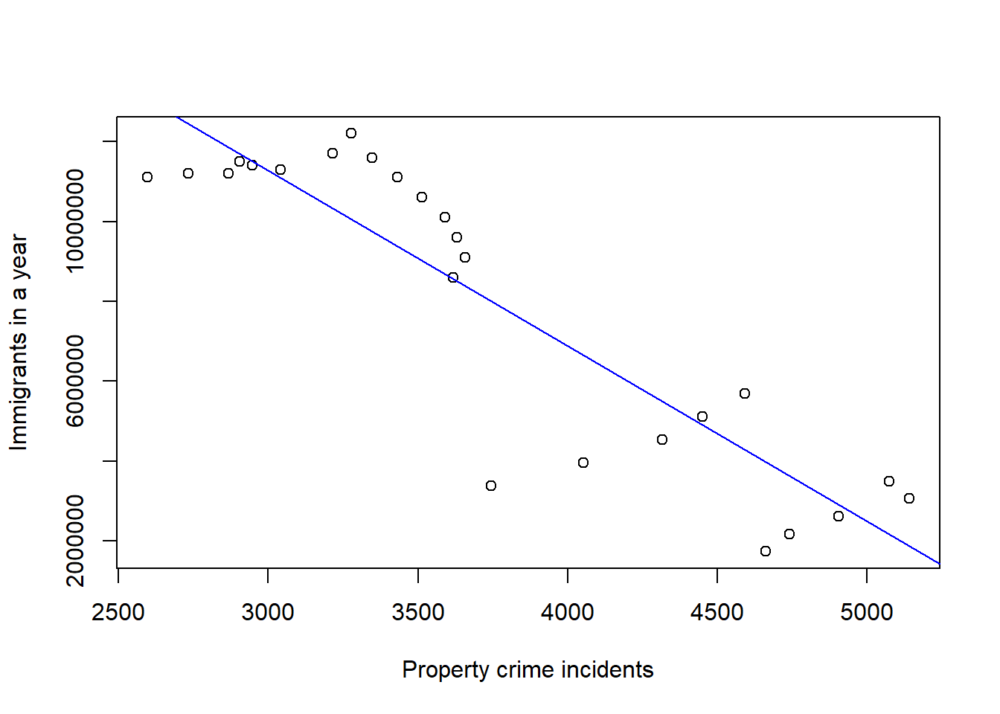

Now let’s look at the association between illegal immigration and crime rates from 1990-2014.
We’ll start by analyzing violent crime rates.
Wow! The correlation between illegal immigration and violent crime is -0.90. That’s a very strong relationship, and this time the relationship is linear and negative. The p-value is a miniscule 0.00000000062.
What happens when we adjust for illegal immigration’s impact on the greater US population?
illegal_adjusted <- c(illegal$illegal_pop)/c(usapop$uspop[31:55])
violentillegal_adjusted <- (lm(illegal_adjusted ~ ninetyviolentcrime))
plot(ninetyviolentcrime, illegal_adjusted, xlab ="Violent crime incidents", ylab ="Immigrants as proportion")
abline(violentillegal_adjusted, col="blue")
cor(ninetyviolentcrime, illegal_adjusted)## [1] -0.8800959summary(violentillegal_adjusted)##
## Call:
## lm(formula = illegal_adjusted ~ ninetyviolentcrime)
##
## Residuals:
## Min 1Q Median 3Q Max
## -0.015924 -0.003132 0.001128 0.003063 0.008387
##
## Coefficients:
## Estimate Std. Error t value Pr(>|t|)
## (Intercept) 0.069681315 0.004940536 14.10 0.000000000000825 ***
## ninetyviolentcrime -0.000079627 0.000008957 -8.89 0.000000006707470 ***
## ---
## Signif. codes: 0 '***' 0.001 '**' 0.01 '*' 0.05 '.' 0.1 ' ' 1
##
## Residual standard error: 0.005693 on 23 degrees of freedom
## Multiple R-squared: 0.7746, Adjusted R-squared: 0.7648
## F-statistic: 79.03 on 1 and 23 DF, p-value: 0.000000006707There’s still a negative, linear relationship here. The strength is strong. The correlation didn’t change much. It just dipped slightly to -0.88, and the p-value is still a tiny 0.0000000067.
What happens when we look at illegal immigration and property crime?
ninetypropertycrime <- c(uscrime$property[31:55])
propertyillegal <- (lm(illegal$illegal_pop ~ ninetypropertycrime))
plot(ninetypropertycrime, illegal$illegal_pop, xlab ="Property crime incidents", ylab ="Immigrants in a year")
abline(propertyillegal, col="blue")
summary(propertyillegal)##
## Call:
## lm(formula = illegal$illegal_pop ~ ninetypropertycrime)
##
## Residuals:
## Min 1Q Median 3Q Max
## -4623544 -946716 210080 1371676 2143267
##
## Coefficients:
## Estimate Std. Error t value Pr(>|t|)
## (Intercept) 24455430.8 1729389.7 14.141 0.000000000000782 ***
## ninetypropertycrime -4394.7 450.7 -9.751 0.000000001228011 ***
## ---
## Signif. codes: 0 '***' 0.001 '**' 0.01 '*' 0.05 '.' 0.1 ' ' 1
##
## Residual standard error: 1706000 on 23 degrees of freedom
## Multiple R-squared: 0.8052, Adjusted R-squared: 0.7967
## F-statistic: 95.08 on 1 and 23 DF, p-value: 0.000000001228cor(ninetypropertycrime, illegal$illegal_pop)## [1] -0.8973372Interesting. As it relates to illegal immigration, the property crime data looks very similar to the violent crime data. There’s a strong, negative, linear relationship. The correlation is -0.90. The p-value is 0.0000000012.
Let’s see what happens when we look at illegal immigration as it relates to property crime, this time adjusting for population impact.
propertyillegal_adjusted <- (lm(illegal_adjusted ~ ninetypropertycrime))
plot(ninetypropertycrime, illegal_adjusted, xlab ="Preoperty crime incidents", ylab ="Immigrants as proportion")
abline(propertyillegal_adjusted, col="blue")
cor(ninetypropertycrime, illegal_adjusted)## [1] -0.865451summary(propertyillegal_adjusted)##
## Call:
## lm(formula = illegal_adjusted ~ ninetypropertycrime)
##
## Residuals:
## Min 1Q Median 3Q Max
## -0.015069 -0.003023 0.001124 0.004710 0.007177
##
## Coefficients:
## Estimate Std. Error t value Pr(>|t|)
## (Intercept) 0.076397111 0.006088984 12.547 0.00000000000904 ***
## ninetypropertycrime -0.000013147 0.000001587 -8.285 0.00000002342079 ***
## ---
## Signif. codes: 0 '***' 0.001 '**' 0.01 '*' 0.05 '.' 0.1 ' ' 1
##
## Residual standard error: 0.006007 on 23 degrees of freedom
## Multiple R-squared: 0.749, Adjusted R-squared: 0.7381
## F-statistic: 68.64 on 1 and 23 DF, p-value: 0.00000002342That adjustment didn’t have much of an impact. The attributes of the relationship remain the same. The correlation lessens slightly but is still a strong -0.87, with a p-value of 0.000000023.